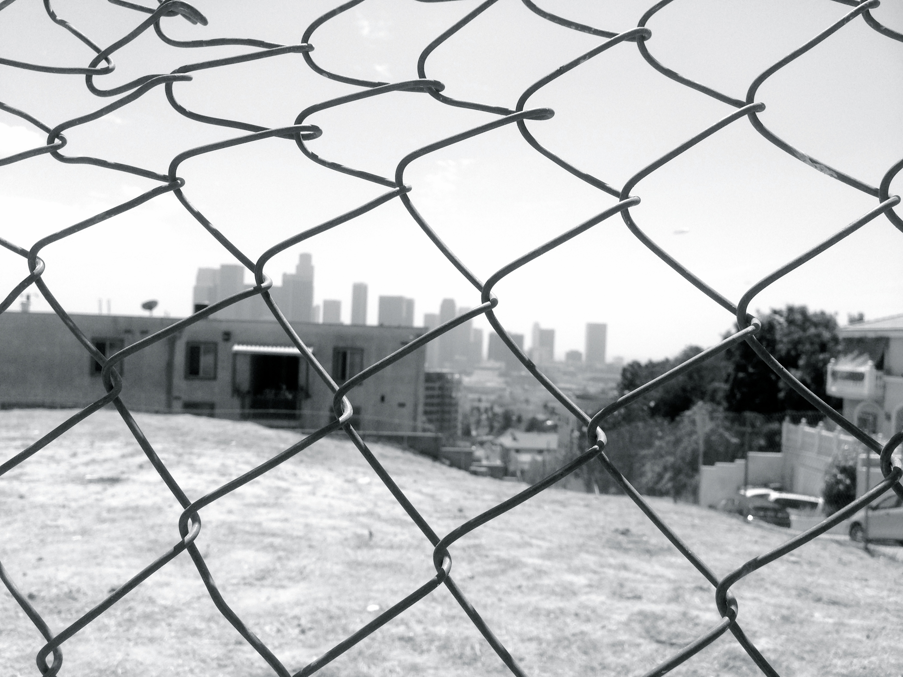
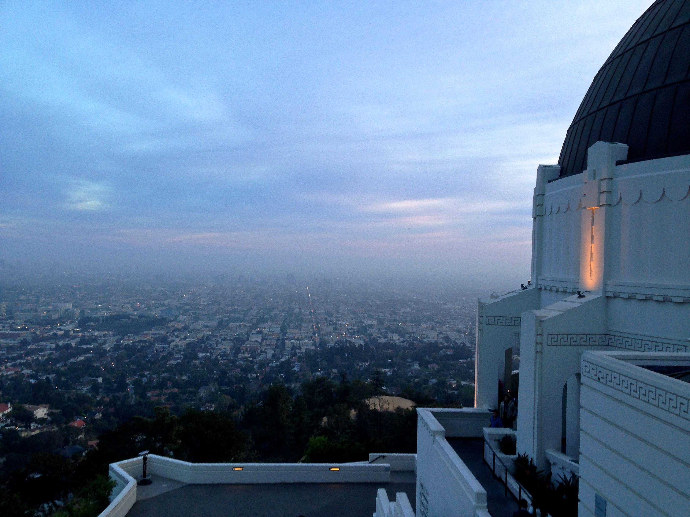
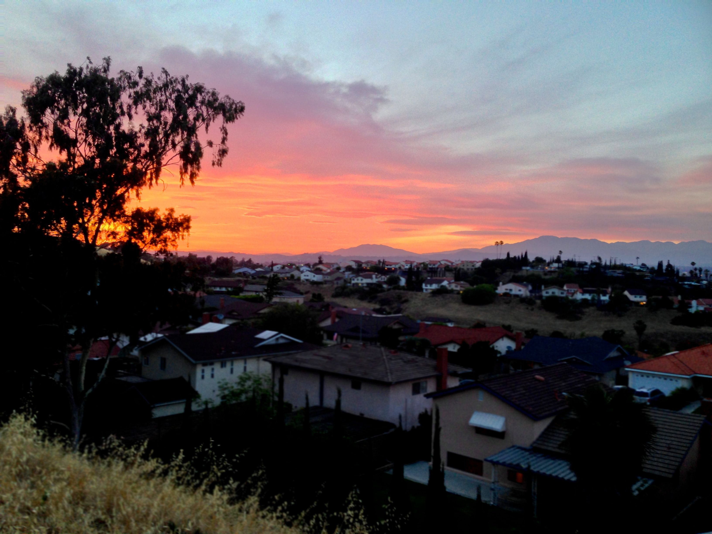
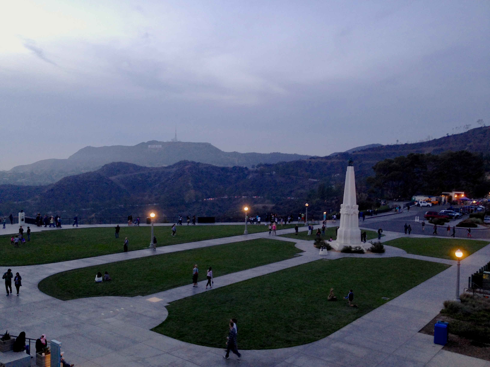

The opposite of loneliness is engagement, yes?

LOS ANGELES
Under the Bridge
"Sometimes I feel
Like I don't have a partner
Sometimes I feel
Like my only friend
Is the city I live in
The city of angels
Lonely as I am
Together we cry"

GRIFFITH OBSERVATORY
Griffith Observatory is a facility in Los Angeles, California sitting on the south-facing slope of Mount Hollywood in Los Angeles' Griffith Park. It commands a view of the Los Angeles Basin, including Downtown Los Angeles to the southeast, Hollywood to the south, and the Pacific Ocean to the southwest. The observatory is a popular tourist attraction with an extensive array of space and science-related displays. Since the observatory opened in 1935, admission has been free, in accordance with Griffith's will.

Life Motifs:
Always be hustling
Take care of the edge cases
It's not fun unless it's difficult
Live, so that your life is the greatest joke ever told
SANTA MONICA BEACH

And the rich, while having lived richy, had actually lived poorly.
While the poor, having lived poorly, had actually lived richly.
88 STEPS

Love is synthetic
VIEW FROM GRIFFITH OBSERVATORY

The only thing she hated more than him was being without him
LOS ANGELES